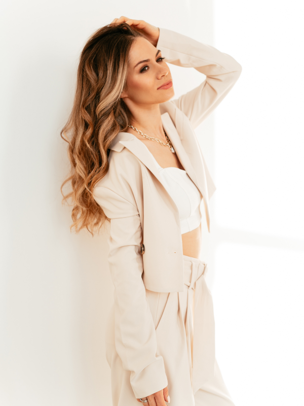

<section class="who">
	<div class="container">
		<h2 class="who__title"><span>Кто мы?</span></h2>
		<div class="who__description">
			Мы помогаем брендам разговаривать с аудиторией с 2015 года. Комплексно продвигаем бренды и обеспечиваем PR-поддержку клиентов на 360 градусов
		</div>
		<div class="who__wrapper">
			<div class="who__image">
				
			</div>
			<div class="who-description">
				<div class="who-description__title">Элина Бессонова</div>
				<div class="who-description__subtitle">Основатель коммуникационного агенства PR Lied</div>
				<ul class="who-description__list">
					<li class="who-description__item">
						Закончила Московский Государственный Университет Печати, факультет «Издательское дело и редактирование»
					</li>
					<li class="who-description__item">
						Опыт работы в СМИ и коммуникациях более 8 лет. Последние 5 лет работала в  PR-агентстве на позиции руководителя практики направления Fashion & Beauty. Также реализовывала проекты в строительной и ресторанной сферах. До работы в PR работала журналистом в холдинге  «iNews». 
					</li>
					<li class="who-description__item">
						В портфолио Эллины бренды: Lush, Gulliver, Московский ювелирный завод, Birkenstock, S.Oliver, Caprice, Kampmann, Grohe,  Sezar Group, Автопрага, Андерсон, Ампир Декор и многие другие.
					</li>
					<li class="who-description__item">
						Эллина регулярно читала мастер-классы для маркетологов-профессионалов в сфере Fashion&Beauty.
					</li>
				</ul>
			</div>
		</div>
	</div>
</section>